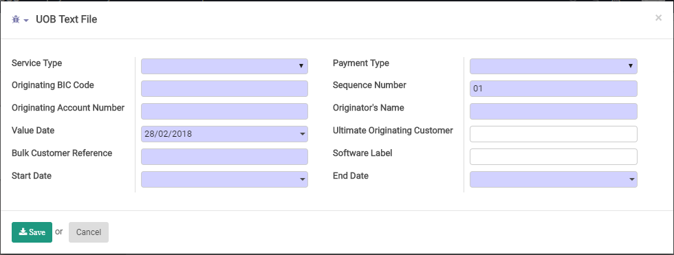

<section class="oe_container">
    <div class="oe_row oe_spaced">
        <h2 class="oe_slogan">Singapore UOB Bank giro</h2>
        <h3 class="oe_slogan">The Graphical overview</h3>
        <div class="oe_span8">
            <div class="oe_demo oe_picture oe_screenshot">
                
            </div>
        </div>
        <div class="oe_span3">
            <br>
            <br>
            <p class='oe_mt32'>
            By given configuration, you can generate UOB bank giro file for salary payment.
            </p>
        </div>
    </div>
</section>